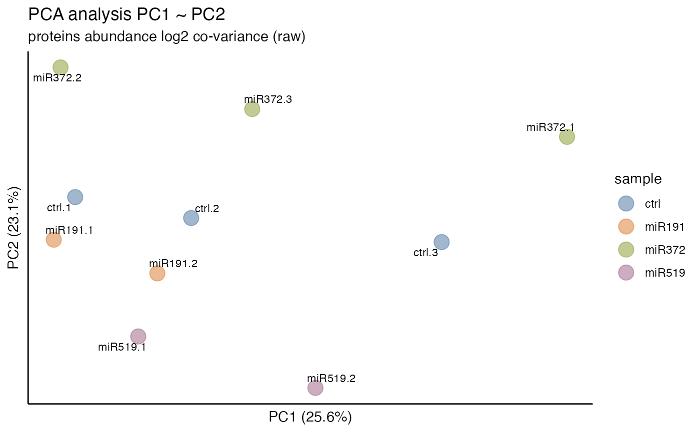

User Defined Import
workflow-userimport.RmdWhen working with scientific data, it’s common to come across file formats that are specific to a particular project, colleague, or analysis pipeline. These custom file formats can pose a challenge when trying to import the data into a standard data analysis tool. Fortunately, tidyproteomics offers a solution by allowing users to define custom import definitions for these unique file formats.
With tidyproteomics, you can create an import definition that is tailored to your specific file format. This custom definition will specify how the data should be read, parsed, and transformed into a tidy data format. Once the definition is created, you can use it to easily import data from future files with the same format.
In this document, we will walk you through the process of creating a custom import definition using tidyproteomics. By the end of this guide, you’ll have the tools you need to efficiently import data from any custom file format you may encounter in your scientific work.
An Unknown Dataset
We will be using the data from the PRIDE archive PXD004163, which fortunately has a decently preserved data file from a TMT experiment. Reading into the Data Processing Protocol we find a not-standardized analysis pipeline were raw files were converted to mzML format, searched using MSGF+ and Percolator, and quantified using OpenMS project’s IsobaricAnalyzer. PSMs found at 1% FDR were used to infer gene identities and quantify using PSM quantification ratios.
NOTE: An indepth analysis of this data is provided in the online DEqMS
documentation. The discussion here is simply about how to import data
derived by a method other than those described in the
vignette("importing").
url <- "https://ftp.ebi.ac.uk/pride-archive/2016/06/PXD004163/Yan_miR_Protein_table.flatprottable.txt"
download.file(url, destfile = "./miR_Proteintable.tsv",method = "auto")After downloading we find the following (transposed here for readability):
| header | row_1 | row_2 | row_3 | … | |
| col_01 | Protein accession | A2M | A2ML1 | AAAS | … |
| col_02 | Gene | NA | NA | NA | … |
| col_03 | Associated gene ID | ENSG00000175899 | ENSG00000166535 | ENSG00000094914 | … |
| col_04 | Description | alpha-2-macroglobulin [Source:HGNC Symbol;Acc:HGNC:7] | alpha-2-macroglobulin-like 1 [Source:HGNC Symbol;Acc:HGNC:23336] | achalasia, adrenocortical insufficiency, alacrimia [Source:HGNC | … |
| col_05 | Coverage | NA | NA | NA | … |
| col_06 | # Proteins | na | na | na | … |
| col_07 | Proteins in group | NA | NA | NA | … |
| col_08 | miR FASP_# Unique peptides | 8 | 1 | 6 | … |
| col_09 | miR FASP_# Peptides | 9 | 1 | 6 | … |
| col_10 | miR FASP_# PSMs | 12 | 1 | 11 | … |
| col_11 | miR FASP_Protein error probability | 2.87E-38 | 0.0169213 | 8.18E-39 | … |
| col_12 | miR FASP_q-value | 0 | 0.0141899 | 0 | … |
| col_13 | miR FASP_PEP | 0.00162245 | 0.7890065 | 0.00162245 | … |
| col_14 | miR FASP_MS1 precursor area | 16352434.3 | 768887 | 69955068 | … |
| col_15 | miR FASP_tmt10plex_126 | 0.93083081 | 0.88733015 | 0.91543699 | … |
| col_16 | miR FASP_tmt10plex_126 - # quanted PSMs | 11 | 1 | 11 | … |
| col_17 | miR FASP_tmt10plex_127N | 0.77202146 | 1.0947978 | 0.9168362 | |
| col_18 | miR FASP_tmt10plex_127N - # quanted PSMs | 11 | 1 | 11 | … |
| … | … | … | … | … | … |
From the `vignette(“importing”)` vignette we know that there are 4
must have columns for importing protein quantitative data -
sample: sample, sample: sample_file,
identifier: protein, and
quantitative: abundance_raw.
From looking at the file we can assume:
identifier: protein= Protein accession (col_01)quantitative: abundance_raw= miR FASP_tmt10plex_1xx (cols_ 15, 17, 19, 21, 23, 25, 27, 29, 31, 33)sample: sample= will be derived from a pivot onquantitative: abundance_rawsample: sample_file= not provided, will be assumed as the import file name
Additionally we see that some accounting and annotation data is present:
accounting: num_psms= miR FASP_# PSMs (col_15)accounting: num_peptides= miR FASP_# Peptides (col_09)accounting: num_unique_peptides= miR FASP_# Unique Peptides (col_08)annotation: description= Description (col_04)annotation: gene_name= Associated gene ID (col_03)
Build an Import Definition File
We need to construct an import definition file, which has the objective of pulling in only the needed data, changing the column names to standard tidyproteomic’s definitions, and pivot the table such that one row accounts for only one quantitative measure. These definitions are shown in the `vignette(“importing”)` vignette, and structured by the following columns:
category- defines which of the 4 SQL-like tables in the data object this information belongs.column_defined- defines the SQL-like column name, using the snake_case style convention.column_import- a regular expression defined pattern for recognizing 1 or more columns. This is useful when each “sample/run” is defined as a column with no exact number of columns defined for importing.pattern_extract- a regular expression pattern to pull in only the data needed, such as extracting just the protein accession number from a longer text.pattern_remove- a regular expression pattern to automatically filter out some results, such as REV_* in protein accession indicating a decoy.pattern_split- a string value to split on, for example when multiple proteins are listed separated by;.pivot- a TRUE only indicator that this column should pivot, such as the quant columns identified above.
Definition File
This is the final defnintion file, saved as a tab-seperated-value
(.tsv) file In our project directory, named
TMTOpenMS_proteins.csv.
| category | column_defined | column_import | pattern_extract | pattern_remove | pattern_split | pivot |
|---|---|---|---|---|---|---|
| sample | sample | (?<=tmt10plex\_)[0-9]+.+ | ||||
| sample | sample_file | .+\_tmt10plex\_[0-9]+.+ | ||||
| identifier | protein | ^Protein accession$ | \; | |||
| quantitative | abundance_raw | ^miR\sFASP\_tmt10plex.{4,5}$ | TRUE | |||
| accounting | num_psms | ^miR FASP_# PSMs$ | ||||
| accounting | num_peptides | ^miR FASP_# Peptides$ | ||||
| accounting | num_unique_peptides | ^miR FASP_# Unique peptides$ | ||||
| accounting | protein_error_prob | ^miR FASP_q-value$ | ||||
| accounting | protein_qvalue | ^miR FASP_Protein error probability$ | ||||
| annotation | description | ^Description$ | ||||
| annotation | gene_name | ^Associated gene ID$ |
Importing Data
library(dplyr)
library(tidyproteomics)
data_prot <- "miR_Proteintable.tsv" %>% import('PXD004163', 'proteins', path = "TMTOpenMS_proteins.tsv")ℹ Importing PXD004163:
ℹ ... split protein with \; not detected
ℹ ... no homology detected
ℹ ... match between runs not found in data
✔ ... parsing miR_Proteintable.tsv [2.1s]
✔ ... tidying the data and finishing up [1.8s]Printing out the data object we can see we have 10 samples from the TMT_10plex. We need to reassign the raw TMT labels to some sample designations and filter the data.
data_prot
#>
#> ── Quantitative Proteomics Data Object ──
#>
#> Origin PXD004163
#> proteins (15.55 MB)
#> Composition 10 files
#> 10 samples (s126, s127n, s127c, s128n, s128c, s129n, s129c, s130n, s130c, s131)
#> Quantitation 9638 proteins
#> 0.48 log10 dynamic range
#> 0.687% missing values
#> *imputed
#> Accounting (6) num_unique_peptides num_peptides num_psms protein_qvalue protein_error_prob
#> imputed
#> Annotations (2) gene_name description
#> Note that the log10 dynamic range is 0.39, typically for TMT this is around 3, and for LFQ it can be anywhere from 4 to 8. The plot of quantitative rank and quantitative value also looks atypical – the manuscript states:
which were quantified using the medians of peptide spectrum matches quantification ratios.
data_prot %>% plot_quantrank()
The TMT labeling assignments are not not provided in the literature, but can be found in the DEqMS tutorial:
data_prot <- data_prot %>%
subset(protein_qvalue < 0.01) %>%
reassign(sample == 's126', .replace = 'ctrl') %>%
reassign(sample == 's127n', .replace = 'miR191') %>%
reassign(sample == 's127c', .replace = 'miR372') %>%
reassign(sample == 's128n', .replace = 'miR519') %>%
reassign(sample == 's128c', .replace = 'ctrl') %>%
reassign(sample == 's129n', .replace = 'miR372') %>%
reassign(sample == 's129c', .replace = 'miR519') %>%
reassign(sample == 's130n', .replace = 'ctrl') %>%
reassign(sample == 's130c', .replace = 'miR191') %>%
reassign(sample == 's131', .replace = 'miR372')
#>
#> ℹ Subsetting data: protein_qvalue < 0.01
#> ✔ Subsetting data: protein_qvalue < 0.01 ... done
#>
#> ℹ Reassigning 1
#> ℹ Reassigning 2
#> ℹ Reassigning 3
#> ℹ Reassigning 4
#> ℹ Reassigning 5
#> ℹ Reassigning 6
#> ℹ Reassigning 7
#> ℹ Reassigning 8
#> ℹ Reassigning 9
#> ℹ Reassigning 10
data_prot
#>
#> ── Quantitative Proteomics Data Object ──
#>
#> Origin PXD004163
#> proteins (14.40 MB)
#> Composition 10 files
#> 4 samples (ctrl, miR191, miR372, miR519)
#> Quantitation 8742 proteins
#> 0.39 log10 dynamic range
#> 0.216% missing values
#> *imputed
#> Accounting (6) num_unique_peptides num_peptides num_psms protein_qvalue protein_error_prob
#> imputed
#> Annotations (2) gene_name description
#> 
Note that DEqMS “.. takes into account the inherent dependence of protein variance on the number of PSMs or peptides used for quantification, thereby providing a more accurate variance estimation.” and as such PSM count need to be be integrated into this analysis, following the protocol outlined in the documentation. The purpose of this vignette is not to replicate the DEqMS method, rather to demonstrate how one would build an import definition file to utilize tidyproteomics.